11
Using Connectivity
This chapter contains these topics:
- Overview of Pin Connectivity
- Propagating Nets
- Adding and Deleting Shapes on Nets
- Assigning and Unassigning Nets to Shapes
- Selecting Shapes Based on Nets
- Tracing Nets Using the Mark Net Command
- Probing Nets, Instances, Pins, and Shapes
See also Implementing External Connections (Must Connects) in Parameterized Cells. This is an application note on
Overview of Pin Connectivity
Any object with pins is a device, which includes transistors, resistors, or capacitors. By default, pins are connected internally. The Connectivity – Pins command lets you tell the router the level at which to connect a pin or group of pins in a net, internally or externally.
- The Connectivity – Pins – Must Connect command tells the router to connect the selected pin or group of pins in a net externally (at a higher level). When you connect pins externally, you do not need to route between the pins inside the cell. See Defining Must Connect Pins.
- The Connectivity – Pins – Strongly Connected command tells the router to connect the selected pin or group of pins in a net internally (within the device). When you connect pins internally (strong connect), at least one pin in the group must be connected externally. See Defining Strongly Connected Pins.
- The Connectivity – Pins – Weakly Connected command tells the router to connect the selected pin or group of pins in a net externally. Similar to strongly connected pins, all weakly connected pins should also be connected together internally. Weakly connected pins have limited external connection to avoid specific internal connections (typically ones with high-resistance paths). See Defining Weakly Connected Pins.
- The Connectivity – Pins – Pseudo Parallel Connect command tells the router that the selected instance terminals (within an instance) do not need to be connected, even though they are on the same net. See Defining Pseudo Parallel Connected Net.
The ability to define connection types for pins can be useful if:
- You are a library developer designing a library device for use in a block or circuit design and need to provide layout designers with maximum flexibility by defining some connections internally and leaving other connections to be completed at the next level of design (see For Library Developers)
- You are a layout designer using a device designed by others in a layout and need to specify, later in the layout cycle, which pins to connect externally (see For Layout Designers)
The following examples show how the ability to define pins as must connects, strongly connected, weakly connected, or pseudo parallel connects can make the design process more efficient for both these job functions.
For Library Developers
If you are working as a library developer, a typical device might be a multi-fingered FET like this.
- G(1) and G(2) are weakly connected (inside the device)
- G(3) and G(4) are weakly connected (inside the device)
- The pair G(1)/G(2) must be externally connected to the pair G(3)/G(4)
- S(1) must be externally connected to S(2)
To use this device in a design, if no external (must-connect) connections are defined, you must make internal (strongly connected) connections so the cell looks like this:
Then, when this device is used in a design, the flight lines look like this:
If the layout designer makes connections between G and G(2) or G(4), the layout editor accepts the connection as complete. If the layout designer makes connections between S and S(1) or S(2), the layout editor accepts the connection as complete.
If you, as a library developer, do not want to complete the connections to the source or gate inside the device, but want the connections made at the next level of hierarchy, you do not wire the internal connections. Then, when the cell is used in a design, the flight lines look like this:
If the layout designer makes a connection between S and S(1), the software does not accept the connection as complete and displays a flight line to S(2). If the layout designer makes a connection between G and G(2), the software does not accept the connection as complete and displays a flight line to G(4).
If you make a connection between G and G(2) and G(4), the software accepts the connection as complete and displays no more flight lines on this net, because G(1) and G(3) are weakly connected to G(2) and G(4) respectively.
If you make a connection between G and G(2), and between G(1) and G(3), this is considered an error and is indicated by a marker. The software would not accept the internal weak connection between G(1) and G(2) to complete the net.
For Layout Designers
If you are working as a layout designer, a typical design might be a two-row-high standard cell layout like this.
Floorplanning information regarding external connections is provided on the boundary of the design by an outside source, such as a circuit designer or library. Given that information early, you can identify which pins must be must connects, strong connects, or weak connects, and can use that information for device placement and wiring.
If you define no external connections, the flight lines look like this:
The library developer usually does not connect the top two vdd! pins to the bottom two vdd! pins but does connect the top two vdd! pins together. The same is true for the gnd! pins. So the library developer defines the top two vdd! pins as being externally connected to the bottom two vdd! pins and the same for the gnd! pins. Then, when you are working inside the cell, the flight lines look like this:
When you use the cell in the next level of hierarchy, the flight lines look like this. You must make the connections as shown by the flight lines. You are provided information regarding pin connections by an outside source, such as a circuit designer or library.
Defining Must Connect Pins
To define a set of pins on a net to be connected externally,
-
From the Layout window, choose Connectivity – Pins – Must Connect.
To open the Define Net/Pin Connections Form, press F3.
The Layout window prompts you to click a pin figure to select a net. -
To select the net that includes the pins you want to connect externally, click a shape on that net.
Flight lines appear, connecting only the pins of the net you choose. The flight lines are drawn between pins that still need to be internally (strongly) connected. If incomplete nets are being displayed, the other net flight lines disappear.
Selecting a net does not make a connection change.
The Layout window prompts you to select one or more pins to be connected externally. -
To select the pins you want to connect externally, click pins, one or more, in the selected net.
You can click a pin,shift-click subsequent pins, or select pins by area (click and drag with the right mouse button).
Clicking on the pins of the selected net makes the connection change.- If you select a single pin, all other pins on the net are deselected and that pin is connected externally to all other pins on the net.
- If you select multiple pins, those pins are connected strongly (internally) as a set and are connected as must connects (externally) to all other pins on the net.
When you define the connection of each pin, the flight line display of the net immediately changes to show the connection.
You can also use the Define Must Connected Pins form to select nets. -
To open the Define Must Connected Pins form, press
F3while the Define External Pins command is active.
The Define Must Connected Pins form appears. -
In the form, type the name of a net in the Net field or click the net names in the list box to select them.
To select more than one net at a time to work on, you can -
When you are finished, press
Escapeto cancel the command.
When you define pins as must-connects, the router routes them at the next level of hierarchy.
Defining Strongly Connected Pins
To define a set of pins on a net to be connected strongly (internally),
-
From the Layout window choose Connectivity – Define Pins – Strongly Connected.
To open the Define Net/Pin Connections Form, press F3.
The Layout window prompts you to click a pin figure to select a net. -
To select the net that includes the pins you want to connect, click a shape in that net.You can select a net by selecting a shape in the layout before you choose the Strongly Connected command.Flight lines appear, connecting only the pins of the net you chose. The flight lines are drawn between pins that still need to be strongly connected. If incomplete nets are being displayed, the other net flight lines disappear.
Selecting a net does not make a connection change.
The Layout window prompts you to select two or more pins to be connected strongly. -
To select the pins you want to connect strongly, click pins, one or more, in the selected net.
You can click a pin,shift-clicksubsequent pins, or select pins by area (click and drag with the right mouse button).
Clicking on the pins of the selected net makes the connection change.- If you select a single pin, the other pins are not deselected, and that pin is connected strongly to the current selection of strongly connected pins.
- If you select multiple pins, those pins are connected strongly to all other strongly connected pins on the net.
When you click pins to be strongly connected, the net flight line display immediately changes to show the new information.
You can also use the Define Strongly Connected Pins form to select a net. -
To open the Define Strongly Connected Pins form, press
F3while the Strongly Connected Pins command is active.
The Define Strongly Connected Pins form appears. - In the form, type the name of a net in the Net field or click net names in the list box to select them.
-
In the layout, click the pins you want to define.
When you add or remove pins to be strongly connected, the net flight line display immediately changes to show the new information.
To select more than one net at a time to work on, you can -
When you have finished, press
Escapeto cancel the command.
When you define pins as strongly connected, the router routes them within the design.
Defining Weakly Connected Pins
To define a set of pins on a net to be connected externally because the internal physical connection has a significant resistance,
-
From the Layout window choose Connectivity – Define Pins – Weakly Connected.
To open the Define Net/Pin Connections Form, press F3.
The Layout window prompts you to click a pin figure to select a net. -
To select the net that includes the pins you want to connect externally for this reason, click a shape in that net.You can select a net by selecting a shape in the layout before you choose the Connectivity – Pins – Weakly Connected command.Flight lines appear, connecting only the pins of the net you chose. Dotted flight lines are used to show the internal high-resistance path between the pins. If incomplete nets are being displayed, the other net flight lines disappear.
Selecting a net does not make a connection change.
The Layout window prompts you to select two or more pins to be connected. -
To select the pins you want to connect, click pins, one or more, in the selected net.
You can click a pin,shift-clicksubsequent pins, or select pins by area (click and drag with the right mouse button).
Clicking on the pins of the selected net makes the connection change.- If you select a single pin, the other pins are not deselected, and that pin is connected externally to the current selection of externally connected pins.
- If you select multiple pins, those pins are connected externally to all other externally connected pins on the net.
When you click pins to be externally connected as weak-connects, the net flight line display immediately changes to show the new information.
You can also use the Define Weakly Connected Pins form to select a net. -
To open the Define Weakly Connected Pins form, press
F3while the Weakly Connected Pins command is active. The Define Weakly Connected Pins form appears. - In the form, type the name of a net in the Net field or click net names in the list box to select them.
-
In the layout, click the pins you want to define.
When you add or remove pins to be weakly connected, the net flight line display immediately changes to show the new information.
To select more than one net at a time to work on, you can -
When you have finished, press
Escapeto cancel the command.
When you define pins as weakly connected, the router routes them within the design.
Defining Pseudo Parallel Connected Net
For detailed information about pseudo-parallel connections, see the
Pseudo parallel connections are like must connects within an instance and represent cases where instance terminals do not need to be connected because current does not pass between them.
To define a set of instance terminals on a net for pseudo parallel connection,
-
From the Layout window, choose Connectivity – Pins – Pseudo Parallel Connect.
To open the Define Pseudo Parallel connected net form, press F3.
The Layout window prompts you to click to select a net. -
To select the net that includes the instance terminals you want to connect, click a shape in that net.
Flight lines appear, connecting only the pins of the net you choose. The flight lines are drawn between pins that can be pseudo parallel connected. If incomplete nets are being displayed, the other net flight lines disappear.
Selecting a net does not make a connection change.
If you did not select a net or instance terminal before you chose the command, the Layout window prompts you to select an instance terminal (instTerm). -
To select the instance terminals you want to connect in pseudo parallel connection, click pins, one or more, in the selected net.
You can click an instance terminal,shift-clicksubsequent pins, or select terminals by area (click and drag with the right mouse button).
Clicking on the instance terminals of the selected net makes the connection change.
When you define the connection of each terminal, the flight line display of the net immediately changes to show the connection.
You can also use the Define Pseudo Parallel Connected Pins options form to select nets. -
To open the Define Pseudo Parallel Connected Pins form, press
F3while the Pseudo Parallel Connect command is active.
The Define Pseudo Parallel Connected Net form appears. The form lists all nets without I/O pins (except le_ex_# nets). -
In the form, type the name of a net in the Net field or click the net names in the list box to select them.
To select more than one net at a time to work on, you can -
When you are finished, press the
Escapekey to cancel the command.
When you define pins as pseudo parallel connects, the router does not route them.
Checking Connectivity of Pins
To see whether pins on a net are defined for external connection,
- From the Layout window Connectivity menu, choose Pins – Must Connect.
-
Press
F3to see the Connectivity – Must Connected Pins form.
The form appears, showing all nets that include terminals (possible connections to devices external to the device). -
Click any of the nets shown in the form.
Flight lines for the net appear on the layout (VLS XL and higher tiers), showing whether the terminals are defined as must-connect, strong-connect, or weak-connect.
Propagating Nets
The Propagate Nets command maps terminals on an instance or a homogenous mosaic that you select to the nets in the cellview; that is, it defines how the instance or the instances in the homogenous mosaic are logically connected to the cellview. Using this command, you can assign or reassign a top-level net name for each terminal in the selected instances or the instances in the homogenous mosaic. For each such terminal, the command creates a top-level net, if necessary, and creates an instTerm on that net for the instance terminal. You use this command when you do not have a schematic for your layout cellview.
Routers use this logical connectivity information to physically connect the pins of the instance to the rest of the layout.
Promoting Net Information
To promote net information from an instance in your layout,
- Select one or more instances in the layout.
-
From the Layout window, choose Connectivity – Nets – Propagate.
The Propagate Nets Form appears. If you select more than one instance, the Previous and Next buttons are displayed at the top of the form.
The instance displayed in the form is highlighted in the layout. The form title shows the name and master cell of the instance currently highlighted.The form shows the terminals of the instance and the top-level nets they are mapped to, if any.
Alternatively, with the instance selected, open the Property Editor assistant and select Connectivity from the Property Category Selector list. If you select multiple instances on the canvas, then you can set the net on a particular terminal for all the selected instances. -
For each terminal, type in the top-level net to which you want to map the terminal.
If a Net Name field is left blank, the corresponding terminal is not mapped to a top-level net. Net Name fields can be left blank, but the pins on the corresponding terminals will not be routed.
If you want the net to have the same name as the terminal name, type in the terminal name or click Set to Terminal Name.
If you want all the top-level nets to have the same name as the terminal name, click Set All Net Names to Terminal Name.
If you want to undo all the changes to that instance, click Defaults. The net names revert to their current value.
If you want to clear all the net names, click the Clear All Net Names button. -
Click Previous and Next to edit other instances.
The form keeps track of all the changes you have made. You do not need to click Apply after each change before editing other instances. -
Click OK to apply all the changes.
All the changes you have made are saved to the database. - Choose Options – Display.
- In the Display Controls area, turn on Nets.
- Click OK.
-
Choose View – Redraw.
The new net assignments are displayed in the Layout window.
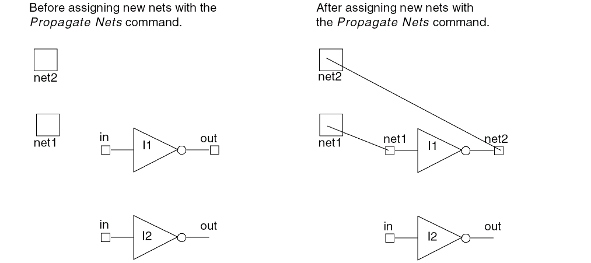
Adding and Deleting Shapes on Nets
The Add Shape To Net command lets you add selected shapes to nets that are attached to pins. An instance or mosaic can be added to a net as long as there is at most one terminal on the net. An instance cannot be added to a net if it contains instTerms. A shape cannot be added to more than one net. Terminals and nets are not deleted when the physical pin shape associated with them is deleted.
The Delete Shape From Net command lets you delete selected shapes from a net. Terminals and nets are not deleted when the physical pin shape associated with them is deleted.
Adding Shapes to a Net
- Select one or more shapes.
-
Choose Connectivity – Nets – Add Shape.
The Add Shape to Net Form appears. - Do one of the following:
-
Click OK to close the form and add the shapes to the nets.
Removing Shapes from a Net
- Select one or more shapes to be removed from a net.
-
Choose Connectivity – Nets – Remove Shape.
The Remove Shape From Net Form appears. - If the net name shown is not the net you want the shapes to be deleted from, type the correct net name.
- Click OK to close the form and delete the shapes from the specified net.
Assigning and Unassigning Nets to Shapes
You can assign and unassign nets to shapes, instance pins, and routed objects like vias and pathsegs by using the leHiAssignNet and leHiUnassignNet functions, respectively. You can assign nets to a shape by tapping an already assigned shape, or by selecting a net from the drop-down list or by typing an existing net name in the Assign Net form. This command works in both the pre-selection and post-selection modes.
Assigning Nets to Shapes in Pre-Selection Mode
To assign a net to a shape in pre-selection mode,
- Select the shapes to which you want to assign a net.
-
Run the leHiAssignNet
- Do one of the following:
-
Press
Escto exit the command.
Assigning Nets to Shapes in Post-Selection Mode
To assign a net to a shape in post-selection mode,
-
Run the leHiAssignNet
- Do one of the following:
-
Select the shapes to which you want to assign a net.
The net is assigned to all the selected shapes. -
Press
Escto exit the command.
You can use the t bindkey to assign another net to the shapes.
Unassigning Nets from Shapes in Pre-Selection Mode
To unassign a net from a shape in pre-selection mode,
- Select the shapes.
-
Run the leHiUnassignNet
The net is unassigned from all the selected shapes.
Unassigning Nets from Shapes in Post-Selection Mode
To unassign a net from a shape in post-selection mode,
-
Run the leHiUnassignNet
-
Select the shapes.
The net is unassigned from all the selected shapes.
Selecting Shapes Based on Nets
You can use the net-based selection feature to select shapes based on their nets. The two ways to enable this feature are shown below:
- Using the Net Based Selection toolbar
-
Using the Net Based Selection option on the Selection Options form
Select the Net Based Selection option on the Selection Options form
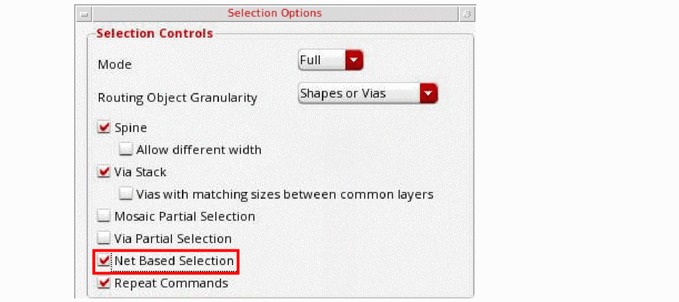
You can also use the environment variable netBasedSelectionOn to enable the net-based selection feature.
When you enable the net-based selection feature, there are three ways in which you can specify the nets to select figures based on that net:
-
Specify the nets in the text field on the Net Based Selection toolbar.
-
Select the Tap Net icon on the Net Based Selection toolbar to populate nets by tapping on an assigned shape in the canvas.
 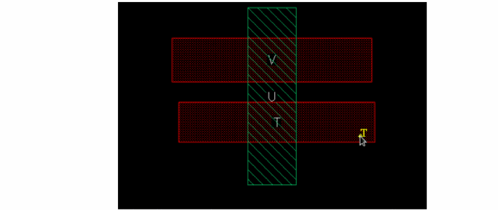Press
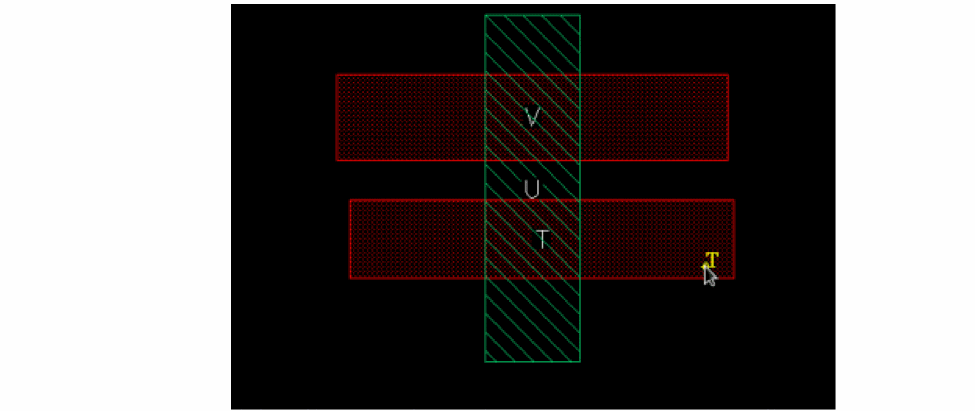PressCtrland click to remove the net of the tapped shape from the list of nets. PressShiftand click to add the net of the tapped shape to the list of nets. - Select nets using the Navigator assistant.
When you select the Reverse option on the Net Based Selection toolbar, shapes, vias and instances with a net other than the net specified in the text field can be selected in the canvas. You can also use the environment variable netBasedSelectionReverse to specify the Reverse option.
Tracing Nets Using the Mark Net Command
The Mark Net command lets you visually trace the physical connectivity of a net(s) in a layout design without having to use a schematic. The command extracts the metal, via, poly and diffusion layer information from the technology file and highlights these in the layout as the net passes from one layer to the next through the hierarchy. The trace is not a selectable object: it is the highlighted net. The Mark Net command is available both in read-only and edit modes.
You can choose which and how many levels of hierarchy to traverse for highlight generation. After the hierarchy selection range is set, you cannot select a shape that is outside the start-stop hierarchical range. You can start the Mark Net command from any level of the hierarchy (from Edit in Place, for example), and the command will correctly trace the net throughout the designated hierarchical range. Mark Net Stop Level, specified in the MarkNet Options Form, can be lower than the Display Level, specified in the Display Options Form. However, if you set the Mark Net Start Level to greater than zero, it is possible to get incomplete net tracing. When the interconnect is interrupted by a shape on a hierarchical depth outside the specified range, the rest of the net is not highlighted even if the subsequent sections of the net are within the specified range.
A traced net remains highlighted as long as the cellview window remains open, unless you use the Unmark Net command to remove the highlighting. If you close the cellview window, the highlighting is deleted. However, as long as the cellview window is open, the nets remain highlighted even after the cellview window is redrawn, after any changes are made to the edit context, or after you exit the command. When the Mark Net command is re-invoked, it does not remove the existing highlighting. This allows you to incrementally mark nets, mark nets from any level of the hierarchy, and retain nets marked as you move throughout the hierarchy. You can mark nets in multiple cellview windows. You can also view the highlighted nets in the plot of a cellview. You can unmark a net later if required.
The highlighting is created relative to the current top-level cellview. If you highlight nets in separate cellview windows, the Unmark Net command removes all highlighting associated with the current top-level cellview. For example, cellview Top contains an instance of cellview Bottom and both the cellviews are open at the same time and you have used Edit In Place into the instance of cellview Bottom in cellview Top. The order in which you mark nets in the two cellview windows determines if Unmark Net removes the highlighting from one or both the cellview windows. If you mark the nets first in cellview Bottom, then this is the current top-level cellview. The marked nets will be highlighted in cellview Top as well. However, if you further mark nets in cellview Top and then Unmark All Nets in cellview Bottom, then it will unmark only those nets that were marked in cellview Bottom. You need to return to cellview Top and use Unmark All Nets to delete the additional highlighting in that window.
The final highlighted net is created by generating one large polygon representing the shapes on the net, so the highlight shows the outline of all the marked shapes; individual shapes on the net are not highlighted.
If the number of shapes on the net is 10,000 or less, a one-line message appears in the CIW, as in the following example:
Number of shapes processed by Mark Net: 5
If the number of shapes on the net is greater than 10,000, the output message in CIW displays each time 10,000 shapes are processed. The traced nets are also displayed incrementally, in sets of 10,000 shapes. When the last shape is processed, the final number of shapes processed is displayed, as in the following example:
Number of shapes processed by Mark Net: 10000...
Number of shapes processed by Mark Net: 20000...
Number of shapes processed by Mark Net: 30000...
Number of shapes processed by Mark Net: 30030
The Mark Net command does not highlight elliptical nets or circular vias.
For the Mark Net command to work, your technology file must list the interconnect layers in the viaDefs section of the technology file. Via definitions are of two types, customViaDefs and standardViaDefs. For more information about via definitions, see the Virtuoso Technology Data ASCII Files Reference for
You can control the thread mode, single, auto or custom, of the Mark Net command using the environment variable, .
Specifying Via, Connected, and Stop Layers for Tracing a Net
You can specify the via layers and the connected layers through which you want to trace a net. You can either use the via layers defined in the technology file or add your own via layers. To add a via layer, specify it as a (layer1 viaLayer layer2) combination on the Via Layers Tab of the MarkNet Options Form. Both the layers in the via layer combination can be specified as layer-purpose pairs (LPPs). To define connected layers, specify them in the (layer1 purpose) (layer2 purpose) format on the Connected Layers Tab of the MarkNet Options Form.
You can also specify the layers through which the Mark Net command must not trace a shape. These resistive layers, referred to as stop layers, help to block tracing through devices such as poly resistor and MIM capacitor. Specify the stop criterion in the layer stopLayer format on the Stop Layers Tab of the MarkNet Options Form. You can specify both layer and stopLayer as LPPs.
In a new Virtuoso session, if the Customized Via Layers, Customized Connected Layers, and Enable Stop Layers check boxes are selected, the settings for the via, connected, and stop layers are read from the markNetOptions file stored at the following location in the technology library directory:
<technologyLibraryName>/.cadence/dfII/markNet/markNetOptions
After the Mark Net command completes its run or when you load new settings from a previously saved file, the via, connected, and stop layer settings are automatically stored in the markNetOptions file stored at the following location in your current working directory:
<currentWorkingDirectory>/.cadence/dfII/markNet/<technologyLibraryName>/markNetOptions
Subsequently, layer settings read from the markNetOptions file in your current working directory override the settings read from the file stored in the technology library directory.
If you want a file containing your customized layer settings to be read each time you start a new Virtuoso session, use the markNetOptionsFile environment variable to specify the path or name of this file. The layer settings stored in the file specified using the markNetOptionsFile environment variable override the settings stored in the other two markNetOptions files.
The format of the markNetOptions file is as follows:
connectedLayers(
; (layer1 purpose) (layer2 purpose) ... enabled
)
stopLayers(
; (layer purpose) (stopLayer purpose) enabled
)
The figure below shows a sample markNetOptions file. Notice that there are separate sections in the file for via, connected, and stop layers. These sections can be present in any order. You can edit the markNetOptions file manually.
You can also manually save the settings for any or all via, connected, and stop layers to a file and location of your choice by using the Save feature in the MarkNet Options Form. By using the Load feature, you can later load the settings from the saved file.
In the figure below, two sets of shapes are shown, labeled (a) and (b). In (a), M1 dg overlaps M2 net, and in (b), and M1 dg overlaps M2 pin. M1 dg and M2 net are defined as connected layers, and M2 pin is defined as the stop layer for M1 dg. The Mark Net command will stop tracing the shape M1 dg when there is an overlapping M2 pin shape.
When you click M1 dg in (a), both M1 dg and M2 net are traced because they are defined as connected layers. Only M2 purpose pin is defined as the stop layer for M1 dg, so tracing continues when the overlapping shape is M2 purpose net. When you click M1 dg in (b), the tracing stops at the point the two shapes overlap because M2 pin is defined as the stop layer for M1 dg. The resultant tracing is shown in the figure below.
Tracing Nets
-
Choose Connectivity – Nets – Mark.
The following message appears in the status line in the design window:Point at a netto mark. - Press F3 for the MarkNet Options Form to appear.
-
Specify the settings on the Options tab.
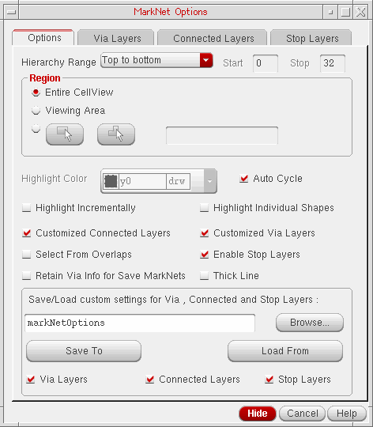-
Set Hierarchy Range.
If you choose User defined from the drop-down list, the Start and Stop fields become editable. Specify the start and stop levels for starting and stopping net tracing. -
Specify the area to trace.
By default, the entire cellview is traced. You can also specify a rectangular or polygonal area. -
Ensure that the Auto Cycle check box is selected if you want the color of highlighted nets to automatically cycle through Cadence-defined LPPs.
Deselect the Auto Cycle check box if you want to manually specify the color for highlighted nets. This enables the Highlight Color cyclic field. Select the required LPP from the cyclic field. -
Select the Highlight Incrementally check box if you want to view a progressive highlighting of the connectivity.
- Select the Highlight Individual Shapes check box to display a separate highlight for each shape.
-
Select the Select From Overlaps check box.
If this check box is selected, the Choose LPP to Mark form appears when you click at a point where shapes overlap. Select an LPP in this form to specify the shape from which to begin tracing.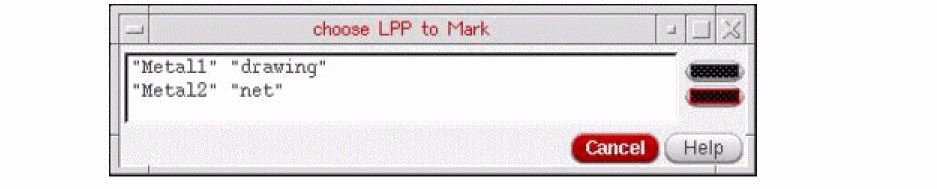 - Ensure that the Customized Via Layers, Customized Connected Layers, and Enable Stop Layers check boxes are selected to enable the settings specified on the Via Layers, Connected Layers, and Stop Layers tabs to be used for tracing nets. If any of these check boxes are not selected, the corresponding tab also gets disabled.
- Select the Retain Via Info for Save MarkNets check box before running the Mark Net command if you later want to save via shapes in a cellview by using the Connectivity – Nets – Save All MarkNets command. By default, no via shapes are saved in the cellview used for storing the traced shapes.
-
In the Save/Load custom settings for Via, Connected and Stop Layers section, specify the file name to which you want to save settings or from which you want to load the settings.
To save the settings to a file:
i) Click Browse and specify the location and name of the file.
By default, all the settings specified on the Via Layers, Connected Layers, and Stop Layers tabs are saved. If you do not want to save the settings for a layer type, deselect the corresponding check box.
ii) Click Save To.
To load the settings from a file:
i) Click Browse and specify the location and name of the file.
By default, the Via Layers, Connected Layers, and Stop Layers tabs are all populated with the settings stored in the file. If you do not want to load the settings for a layer type, deselect the corresponding check box.
ii) Click Load From.
-
Set Hierarchy Range.
-
Click the Via Layers tab.
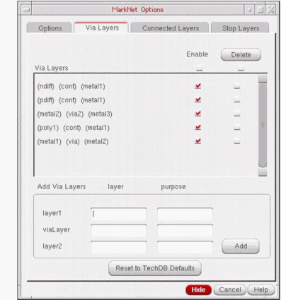-
In the layer1, viaLayer, and layer2 fields, specify the LPPs — the layer name in the layer column and the purpose name in the purpose column.
If you leave the purpose field blank, the Mark Net command interprets it as all purposes of the specified layer. -
Click Add.
The new via layer in the (layer1) (viaLayer) (layer2) format is displayed in the Via Layers list box.If any of the layers is invalid or the specified via layer combination already exists, clicking Add does not add the via layer to the list box above. A warning message informing you about the same is displayed in the CIW.By default, the Enable check box against the newly added via layer is selected and the via layer is used for tracing. You can deselect the Enable check box for any via layer that you do not want to be used for tracing. To select or deselect all the via layers in one go, select or deselect the Enable check box at the top of the Enable column. - Select the check box against a via layer in the Delete column and click Delete if you want to delete the via layer. Select the Delete check box at the top of the Delete column and click Delete if you want to delete all the via layers.
-
Select the Reset to TechDB Defaults check box if you want to use the default via layers defined in the technology file. All via layers defined in the technology file are displayed in the list box, and the Enable check box for each is selected by default.
Any via layers added by you are deleted from the list box. If you want, you can add your own via layers after populating the ones from the technology file.
-
In the layer1, viaLayer, and layer2 fields, specify the LPPs — the layer name in the layer column and the purpose name in the purpose column.
-
Click the Connected Layers tab.
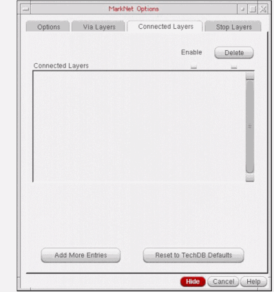-
Click Add More Entries.
A text field appears in the Connected Layers list box. -
Specify the connected layer combination in the text field.
In the example shown in the figure below, the connected layers added imply thatmetal2-drawingis connected tometal3-drawingandmetal1-drawing4is connected tometal2-drawing4.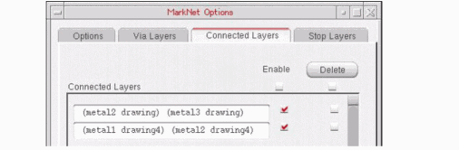You can specify more than two LPPs as connected layers. If you do not specify the purpose, all purposes of that metal layer are connected to the other specified LPP. -
Click Add More Entries to add more entries for connected layers.
By default, the Enable check box against the newly added connected layer is selected and the connected layer is used for tracing. You can deselect the Enable check box for any connected layer that you do not want to be used for tracing. To select or deselect all the connected layers in one go, select or deselect the Enable check box at the top of the Enable column. - Select the check box against a connected layer in the Delete column and click Delete if you want to delete the connected layer. Select the Delete check box at the top of the Delete column and click Delete if you want to delete all the connected layers.
-
Select the Reset to TechDB Defaults check box if you want to use the default connected layers defined in the technology file. All connected layers defined in the technology file are displayed in the list box, and the Enable check box for each is selected by default.
Any connected layers added by you are deleted from the list box. If you want, you can add your own connected layers after populating the ones from the technology file.
-
Click Add More Entries.
-
Click the Stop Layers tab.
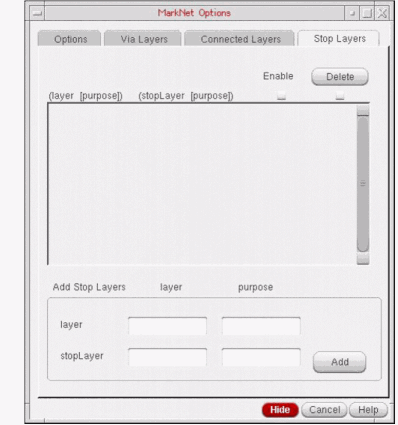-
In the layer and stopLayer fields, specify the LPPs — the layer name in the layer column and the purpose name in the purpose column.
If you leave the purpose field blank, the Mark Net command interprets it as all purposes of the specified layer. -
Click Add.
The new stop layer in the (layer) (stopLayer) format is displayed in the list box above.
In the example shown in the figure below, the stop layers added imply thatpimplant-drawingis a stop layer for all purposes ony9,cont-drawingis a stop layer formetal1-drawing, and all purposes ony9are stop layers for all purposes onmetal3.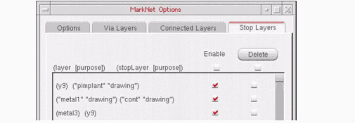By default, the Enable check box against the newly added stop layer is selected and the stop layer is used while tracing. You can deselect the Enable check box for any stop layer that you do not want to be used while tracing. To select or deselect all the stop layers in one go, select or deselect the Enable check box at the top of the Enable column. - Select the check box against a stop layer in the Delete column and click Delete if you want to delete the stop layer. Select the Delete check box at the top of the Delete column and click Delete if you want to delete all the stop layers.
-
In the layer and stopLayer fields, specify the LPPs — the layer name in the layer column and the purpose name in the purpose column.
-
In the design window, click the shape to highlight the required net.
If you click to select an already highlighted net, the following warning message appears in the CIW:*WARNING* Selected object is on an existing marked net.
The net is highlighted on the specified levels of the hierarchy. - Click a point on the second net that you want to highlight. The second net is highlighted on the specified levels of the hierarchy.
-
Click the Via Layers tab.
-
In the layer1, viaLayer, and layer2 fields, specify the LPPs — the layer name in the layer column and the purpose name in the purpose column.
If you leave the purpose field blank, the Mark Net command interprets it as all purposes of the specified layer. -
Click Add.
The new via layer in the (layer1) (viaLayer) (layer2) format is displayed in the Via Layers list box.If any of the layers is invalid or the specified via layer combination already exists, clicking Add does not add the via layer to the list box above. A warning message informing you about the same is displayed in the CIW.By default, the Enable check box against the newly added via layer is selected and the via layer is used for tracing. You can deselect the Enable check box for any via layer that you do not want to be used for tracing. To select or deselect all the via layers in one go, select or deselect the Enable check box at the top of the Enable column. - Select the check box against a via layer in the Delete column and click Delete if you want to delete the via layer. Select the Delete check box at the top of the Delete column and click Delete if you want to delete all the via layers.
-
Select the Reset to TechDB Defaults check box if you want to use the default via layers defined in the technology file. All via layers defined in the technology file are displayed in the list box, and the Enable check box for each is selected by default.
Any via layers added by you are deleted from the list box. If you want, you can add your own via layers after populating the ones from the technology file.
-
In the layer1, viaLayer, and layer2 fields, specify the LPPs — the layer name in the layer column and the purpose name in the purpose column.
-
Click the Connected Layers tab.
-
Click Add More Entries.
A text field appears in the Connected Layers list box. -
Specify the connected layer combination in the text field.
In the example shown in the figure below, the connected layers added imply thatmetal2-drawingis connected tometal3-drawingandmetal1-drawing4is connected tometal2-drawing4.You can specify more than two LPPs as connected layers. If you do not specify the purpose, all purposes of that metal layer are connected to the other specified LPP. -
Click Add More Entries to add more entries for connected layers.
By default, the Enable check box against the newly added connected layer is selected and the connected layer is used for tracing. You can deselect the Enable check box for any connected layer that you do not want to be used for tracing. To select or deselect all the connected layers in one go, select or deselect the Enable check box at the top of the Enable column. - Select the check box against a connected layer in the Delete column and click Delete if you want to delete the connected layer. Select the Delete check box at the top of the Delete column and click Delete if you want to delete all the connected layers.
-
Select the Reset to TechDB Defaults check box if you want to use the default connected layers defined in the technology file. All connected layers defined in the technology file are displayed in the list box, and the Enable check box for each is selected by default.
Any connected layers added by you are deleted from the list box. If you want, you can add your own connected layers after populating the ones from the technology file.
-
Click Add More Entries.
-
Click the Stop Layers tab.
-
In the layer and stopLayer fields, specify the LPPs — the layer name in the layer column and the purpose name in the purpose column.
If you leave the purpose field blank, the Mark Net command interprets it as all purposes of the specified layer. -
Click Add.
The new stop layer in the (layer) (stopLayer) format is displayed in the list box above.
In the example shown in the figure below, the stop layers added imply thatpimplant-drawingis a stop layer for all purposes ony9,cont-drawingis a stop layer formetal1-drawing, and all purposes ony9are stop layers for all purposes onmetal3.By default, the Enable check box against the newly added stop layer is selected and the stop layer is used while tracing. You can deselect the Enable check box for any stop layer that you do not want to be used while tracing. To select or deselect all the stop layers in one go, select or deselect the Enable check box at the top of the Enable column. - Select the check box against a stop layer in the Delete column and click Delete if you want to delete the stop layer. Select the Delete check box at the top of the Delete column and click Delete if you want to delete all the stop layers.
-
In the layer and stopLayer fields, specify the LPPs — the layer name in the layer column and the purpose name in the purpose column.
-
In the design window, click the shape to highlight the required net.
If you click to select an already highlighted net, the following warning message appears in the CIW:*WARNING* Selected object is on an existing marked net.
The net is highlighted on the specified levels of the hierarchy. - Click a point on the second net that you want to highlight. The second net is highlighted on the specified levels of the hierarchy.
Saving Marked Nets
- Trace a net using the steps described in Tracing Nets.
-
Select Connectivity – Nets – Save All MarkNets.
This opens the Save All Mark Nets Form. -
Specify the library, cell, and view names where you want to store the highlighted nets. Alternatively, click Browse to select the library, cell, and view names.
If the specified cellview already exists, a warning message will be issued to confirm whether or not you want to overwrite the specified cellview.
Unmarking Nets
-
Choose Connectivity – Nets – Unmark to delete the highlighting of one or all of the marked nets.
The Unmark Net Form appears. - To unmark one of the nets, click that net.
- To unmark all the nets, click Unmark All.
To unmark all of the marked nets,
Probing Nets, Instances, Pins, and Shapes
Probing allows you to find and highlight certain types of objects from among all the objects present in a design. It lets you highlight the logical connectivity between objects. These objects include nets, terminals, paths, and instances. Probing also lets you select objects to highlight their corresponding elements in a different representation of the same design (schematic and layout windows).
For information regarding the probing SKILL functions, see the Virtuoso Design Environment SKILL Reference.
To select the objects to be highlighted when you probe/select a net, instance, pin, or shape,
-
Choose Options – Highlight.
This displays the Highlight Options Form. - Select Flightlines. All shapes and opens on the probed net will be highlighted.
- To highlight pins and instances on the probed/selected nets, select the Pins and Instances check boxes.
- To highlight only the shapes and pins on the visible layers, select the Visible Shapes Only option.
- Set the Hierarchy Depth to specify the depth up to which you want to display net probing.
- Select Dynamic Highlight to highlight any object over which you hover pointer.
- Select the drawing layer to be used for highlighting the nets.
- Select the Cycle option to use the next color for highlighting subsequent objects.
- Click Apply.
After configuring the options in the Highlight Options form, you can probe nets, shapes, pins, and instances using either pre- or post-selection mode:
Pre-Selection Probing
- In the Highlight Options Form, select Flightlines.
- To highlight pins on the probed/selected nets, select Pins.
- In the cellview, select one, a few, or all objects irrespective of their connectivity.
-
Enter the following SKILL function in the CIW:
geEnterAddNetProbe()
Objects with the same connectivity are probed with the same color. -
Repeat steps 3 and 4 to probe more objects, if required.
In the design below, different objects have different connectivities, as indicated:
The following example illustrates the scenarios when the probe command is executed after either one, two, or all of the objects are edited.
-
When a single object is edited.
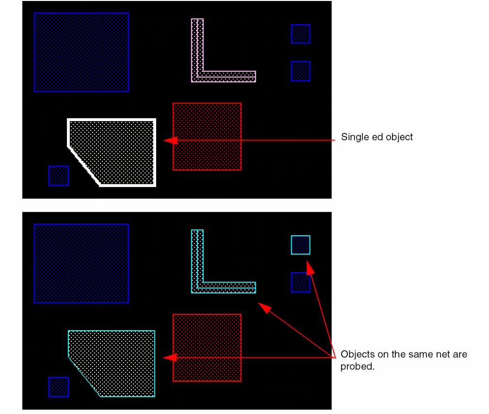 -
When multiple objects are edited.
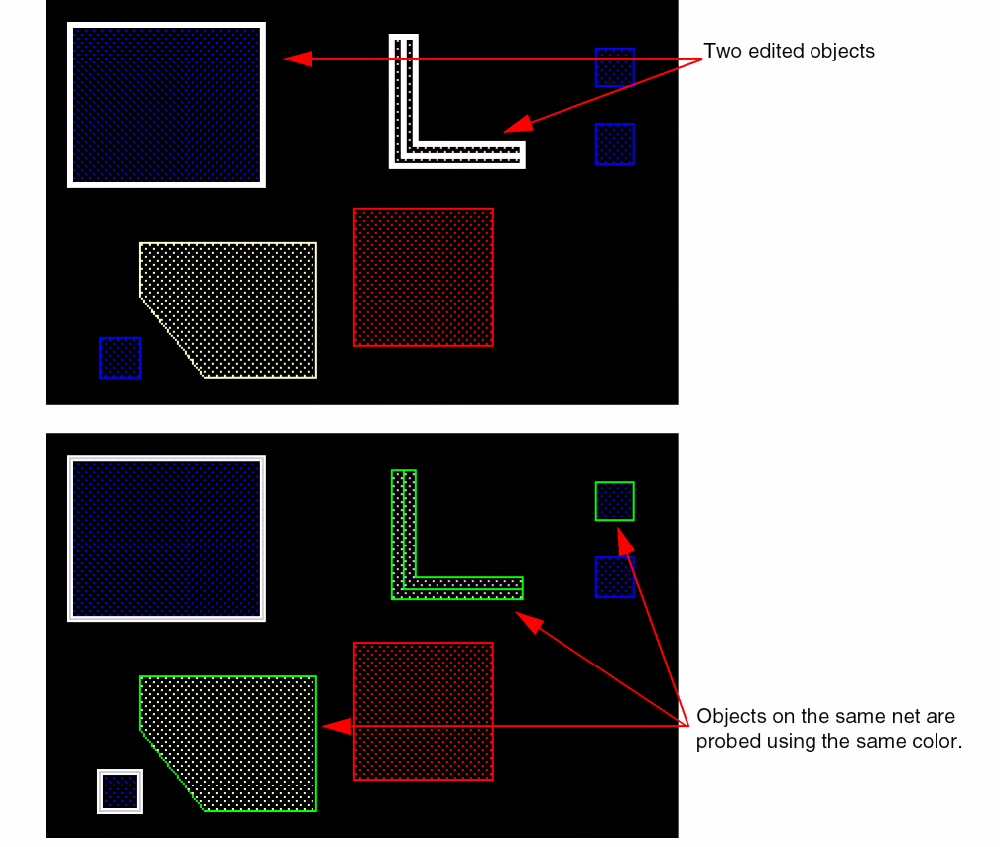 -
When all the objects are edited.
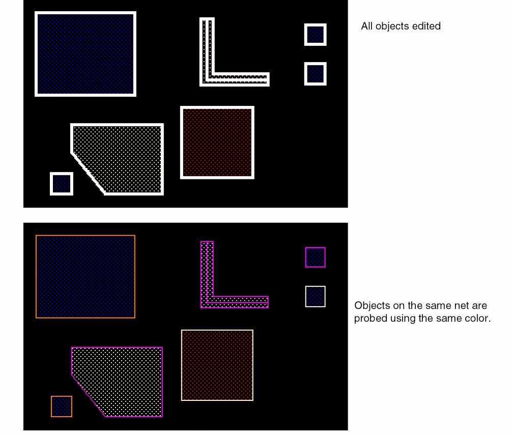
Post-Selection Probing
- In the Highlight Options Form, select Flightlines.
- To highlight pins on the probed/selected nets, select Pins.
-
Enter the following SKILL function in the CIW:
geEnterAddNetProbe()
-
In the cellview, click a single object.
Other objects with the same connectivity as the selected object are probed.In the post-selection mode, objects are probed only when you single-click an object. Objects are not probed if you select multiple objects or use the area selection method.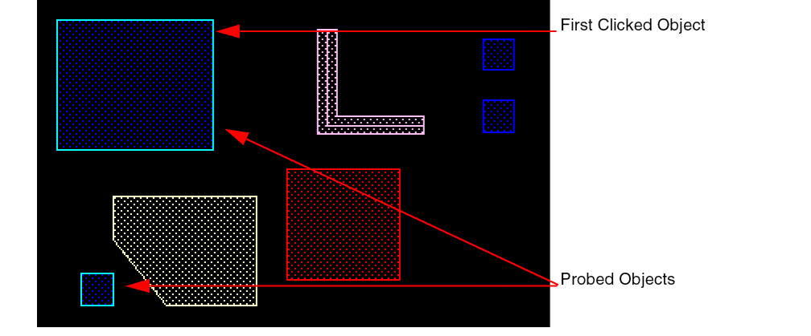 -
You can continue to select other objects, one at a time, with a single click. Objects with the same connectivity are probed with the same color. Earlier probed objects are retained.
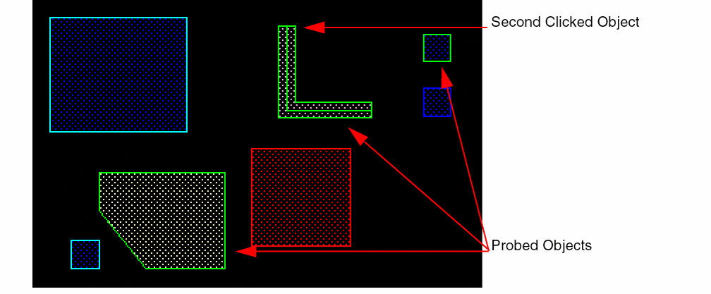 - Press Esc to cancel the probe command.
Specifying True Color Highlights
You can use the environment variables, trueColorProbe and probeHighlight to specify the true color highlight. These variables should be set before opening the Virtuoso session.
Return to top